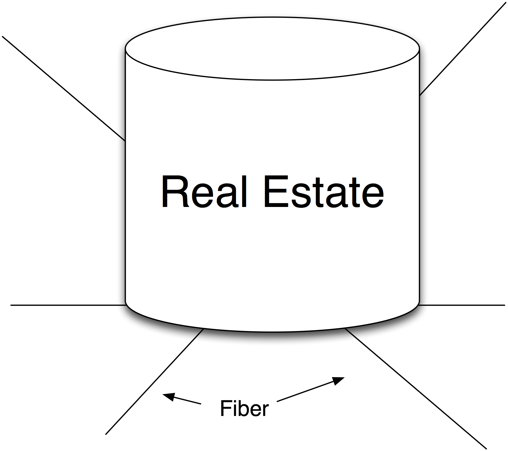
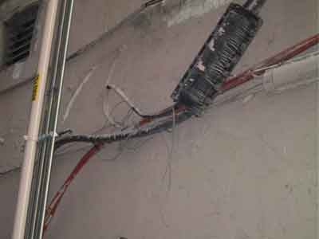
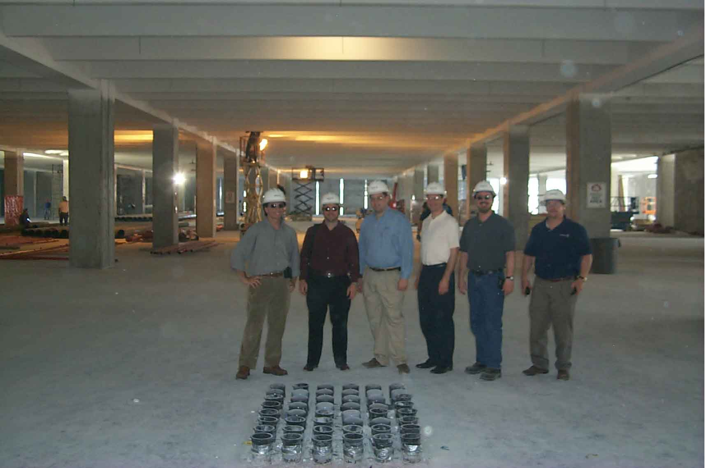
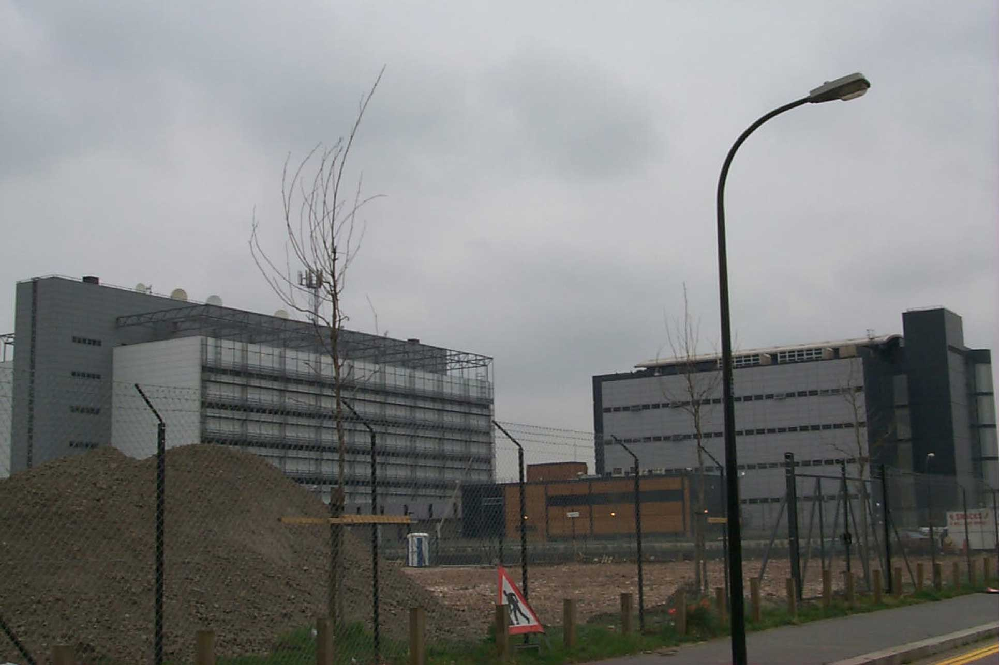

The Data Center Real Estate Model
Real Estate
At the core of every data center is real estate, which is, as the expression goes, all about location. However, for real estate destined to be a networked data center, proximity to fiber is critical, as fiber is what the tenants will ride in on (Figure 12-3). If the colocation center is far from fiber, then the cost of building in is higher. The most desirable real estate is located near fiber nexus points.

Figure 12-3. Real Estate for a data center.
Notes from the field.
Hunt for Real Estate incognito
One telco exec shared that when traveling to a real estate site inspection his group travelled as stealthily as possible to decrease the chances of competitors knowing the site was available and bidding the price up. They registered for rooms under assumed names, did not disclose their trips on their calendars, etc. Many times the real estate owner is not aware of the inherent value of fiber proximity or the value potential of building infrastructure on the site. Since fiber often runs along preexisting rights-of-way along railroad tracks, real estate that opens up near these locations often comes up as key IDC locations.
Some Real Estate Selection Criteria
Selection of location is absolutely critical for Internet Data Centers since it has a direct impact on the cost of the facility and the ultimate cost of participation. Here are a few of the selection criteria that colocation providers shared as key to their location search:
1. Fiber. Ideal sites will be near or on fiber paths, or within a couple miles of dark fiber and telephone company Points of Presences (POPs). Fiber entrance facilities run the gamut from tying fiber to the wall of an alley, as shown in Figure 12-4, to cement-encased fiber entrances, as shown in Figures 12-5 and 12-6.

Figure 12-4. A bad fiber entrance system.
Figure12-5. Cement-encased fiber entrance. The Terremark Miami Facility.
2. Size, floor loading, configuration, expandability. Sites must be large enough to support the intended operations, with floor loading sufficient for the equipment expected. Shared Internet Data Center operators must prepare for random customer equipment, while a single customer (enterprise) data center may know in advance what types of equipment will be placed in the space. There are many other issues regarding fitness for purpose, including weather (earthquakes, hurricanes, floods, etc.), proximity to hospitals, etc. Why proximity to hospitals? If a national disaster occurs, the hospital power grids will be repaired most quickly, so being near a hospital means your data center utility power feed also comes back up from a national disaster more quickly.
Large data centers are often constructed outside of major metropolitan areas. For example, the Docklands in the U.K. has several large-scale data centers (Figure 12‑7) that house some of the largest network providers on the continent.

Figure 12-6. Fiber extended in through the core of the building.

Figure 12-7. Telehouse, London, U.K.
Notes from the field.
Cermack Printing Facility Becomes Core of Internet in Chicago
With respect to floor loading, one large multi-tenant colocation center in Chicago used to house a heavy newspaper printing press operation, with floor loading capable of supporting many tons of paper rolls and processing equipment. This type of venue is more than adequate for any data center needs.
3. Utility power availability and price. Dual grid feeds are desirable, but the requirement for 3,000 amps at 480 volts per 50,000 are typically required for operations. Around 2008, power availability and unit price became critical selection criteria.
4. Facilities yard. There is often a requirement for space at ground level or on the roof for fuel tank(s), generators, chillers, etc. Space required varies, but generally at least 5200 square feet for the first 50,000 square feet of facility is needed. Even when some wholesale data center providers provide reliable power (such as Telehouse shown in Figure 12-7), some customers prefer to own and maintain their own Uninterruptable Power Supply (UPS) in their own private cage.
5. Local government support. Local, state, and federal governments often provide incentives for data center construction in distressed areas. Examples include tax abatements, ease of permitting, expedited access to rights-of-way, power, and support for fiber access that might otherwise require more extensive government, corporate, and community interactions. In some cases, discussion of the number of parking spaces, off-ramp development, signage, etc. are uncovered only at a very late stage of real estate selection.
A perfect example is Terremark’s Technology of the Americas Building in Miami, Florida. The company constructed a six-floor building in a “Federal Empowerment Zone” in downtown Miami, and along with other government programs, received several million dollars in support.
Equinix received similar support for the original Ashburn, Virginia, facility when it was still a corn field. Today Ashburn, Virginia, is known as a telecommunications hub for the U.S.
6. Location of customers and support staff. Since these data centers will ultimately be used by customers and support engineers, it is important that local talent be available. Building a data center in the middle of nowhere would make it difficult to attract and retain people to support the equipment and infrastructure in such a building.
7. Cost of real estate. The location of the IDC to a large degree dictates the cost of the IDC.
Notes from the field.
I Don’t Want My Equipment In New Jersey!
When comparing IDCs in New York and New Jersey, some customers insisted on having their equipment housed in New York. They wanted their gear to have a New York address, and they also said that they didn’t want to travel into New Jersey. The latency is negligible, and the bits don’t care, but to some of these guys the address was more important than the cost of the IDC location.
There is a demographic of so-called “Server-Huggers” that care where their equipment is located for convenience. These people anticipate visiting the location fairly often and perhaps consider each location to be their personal workspace.
For a while, the area surrounding a popular carrier hotel at 165 Halsey Street in New Jersey was considered a dangerous part of town. The running joke in the peering community was that guns are not allowed in the facility, but are handed out by the security guards so you can make your way safely back to your car.
Many criteria must be evaluated with respect to suitability of real estate. For example, all others things being equal, if there is sufficient lead time, many prefer a “greenfield” (brand new) building over an existing building. Time-to-market issues may dictate retrofitting existing facilities (to meet seismic standards, appropriate bracing for floor loading, drainage systems, etc.). Sometimes, demolition and retrofitting can save valuable time to market.
Hidden charges and unexpected delays affect deployment. For example, some telco hotels require interconnection of its tenants via risers to “meet-me” rooms. Some fiber providers have complained that every splice of fiber causes signal loss and meet-me rooms lead to another splice. Further, the expense of running a cross-connect within a building and the time to delivery are not always known.
When considering the buy decision it is important to ensure sufficient space is available for expansion and sufficient time remains on the IDC lease.
Among the core systems, real estate cost is the most variable and may have the largest overall impact on the cost of the facility.
8. Large data centers. According to Roy Earle, for shared colocation facilities there is a trend away from the smaller traditional telco hotel sizes (typically 20,000 sq ft) towards the warehouse-sized facilities (on the order of 300,000 sq ft). While this model allows scaling of infrastructure, it also dramatically reduces the choice for sites. The data center build choice doesn’t suffer from this ailment since smaller amounts of space are easier to find. This effect is compounded by the fact that large warehouses suitable for data centers are typically outside of the major metropolitan areas and therefore likely far away from telco and fiber provider Points of Presence (POPs).
Fire suppression is included in the real estate model as many buildings require sprinkler systems and/or other fire-suppression technologies (dual-trigger activated sprinklers, FM-200, etc.) regardless of the application of the building.
Some large IDC operators interviewed have real estate teams that rate possible locations by hundreds of metrics; they consider these selection-criteria documents to be highly proprietary – their real estate team “secret sauce.”